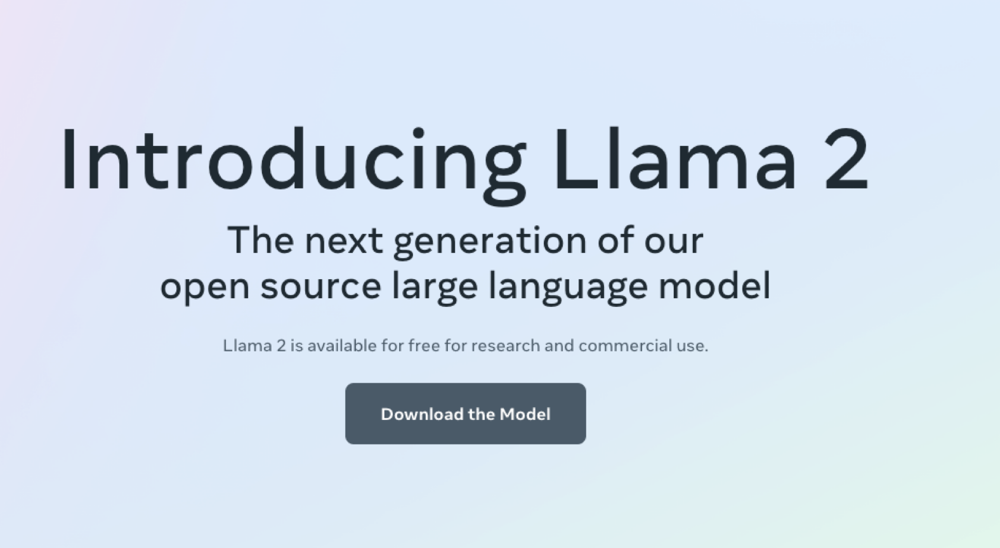
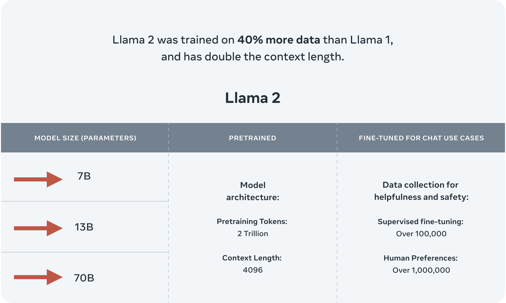
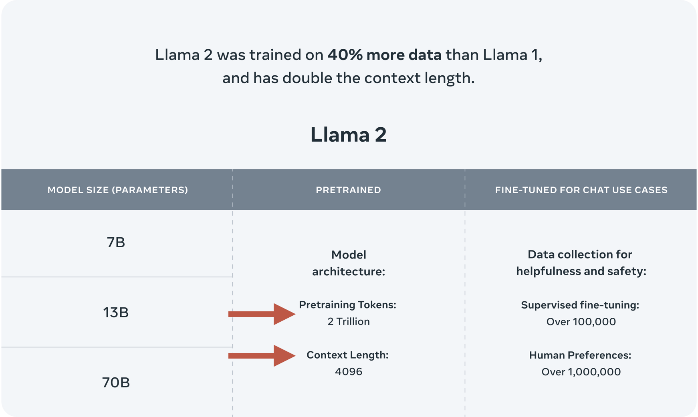
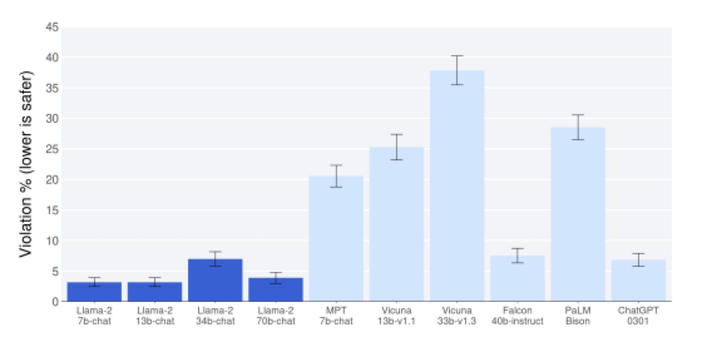
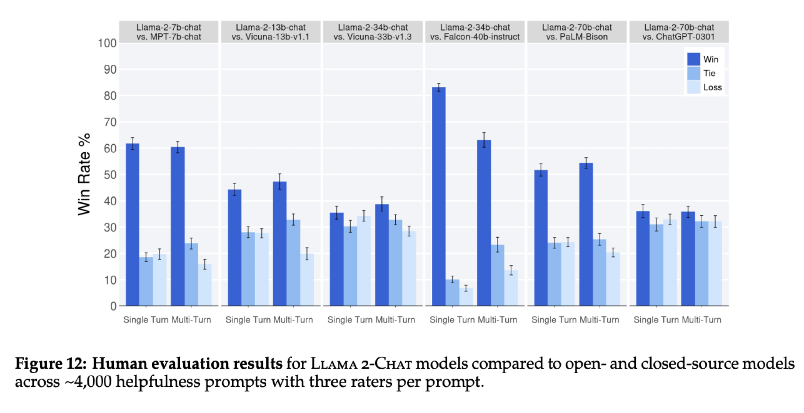

class: center, middle # Getting Started with Llama2 ## Lucas Soares ### 09-04-2023 --- # Methodology Notes The presentation will be organized into the following structure: -- 1. Presentation Block -- 2. Notebook Demo -- 3. Quick Q&A + Summary -- 4. Optional Exercise During Q&A -- 5. Repeat --- # LLMs Predict the Next Word <img src="../notebooks/assets-resources/text-prediction-blnks.png" style="width: 100%"> --- # LLMs Predict the Next Word <img src="../notebooks/assets-resources/chatgpt-text-prediction-1.png" style="width: 80%; margin-top: -10pt; margin-left: 80px; margin-top: -10pt; margin-left: 80px"> --- # LLMs Predict the Next Word <img src="../notebooks/assets-resources/chatgpt-text-prediction-2.png" style="width: 80%; margin-top: -10pt; margin-left: 80px"> --- # LLMs Predict the Next Word <img src="../notebooks/assets-resources/chatgpt-text-prediction-3.png" style="width: 80%; margin-top: -10pt; margin-left: 80px"> --- # LLMs Predict the Next Word <img src="../notebooks/assets-resources/chatgpt-text-prediction-4.png" style="width: 80%; margin-top: -10pt; margin-left: 80px"> --- # LLMs Predict the Next Word <img src="../notebooks/assets-resources/chatgpt-text-prediction-5.png" style="width: 80%; margin-top: -10pt; margin-left: 80px"> --- # LLMs Predict the Next Word <img src="../notebooks/assets-resources/chatgpt-text-prediction-6.png" style="width: 80%; margin-top: -10pt; margin-left: 80px"> --- # LLMs Predict the Next Word <img src="../notebooks/assets-resources/chatgpt-text-prediction-7.png" style="width: 80%; margin-top: -10pt; margin-left: 80px"> --- <img src="../notebooks/assets-resources/llm_predicts_pancakes.png" style="width: 100%;margin-top: 100pt;"> --- <img src="../notebooks/assets-resources/llm-prob-distributions-context.png" style="width:100%; margin-top: 40pt;"> --- # Introduction to Llama2  --- # Introduction to Llama2 - LLM Released by Meta in July of 2023 -- - Open source with a Commercial license -- - [Meta Llama2 Resources](https://ai.meta.com/llama/#resources) --- # Introduction to Llama2 ## What, why & how Llama2? ### - Llama2 is OPEN SOURCE ### - Benefits of Large Language Models  --- # Comes in 3 different sizes: ## 7b, 13B & 70B parameters ### - Introduction to Llama2 ### - Llama2 is OPEN SOURCE <img src="../notebooks/assets-resources/llama2-sizes-intro.png" width="80%"> --- # Comes in 3 different sizes: ## 7b, 13B & 70B parameters ### - Data: Trained on 2 trillion tokens of text data ### - Benefits of Large Language Models  --- # Comes in 3 different sizes: ## 7b, 13B & 70B parameters ### - Context Window: 4096 tokens ### - Data: Trained on 2 trillion tokens of text data  --- # Comes in 3 different sizes: ## 7b, 13B & 70B parameters ### - Context Window: 4096 tokens ### - Safety & Helpfulness ### - Benefits of Large Language Models  --- # Introduction to Llama2 ## What, why & how Llama2? ### [Research Paper](https://arxiv.org/pdf/2307.09288.pdf) <img src="../notebooks/assets-resources/llama2-research-paper.png" width="80%"> --- # Prompt Engineering Guide ## OpenAI’s Guide for Building Good Prompts ### - Strategy 3: Break tasks into subtasks <img src="../notebooks/assets-resources/prompt-engineering-guide.png" width="80%"> --- # Query Your Docs Locally with Llama2 ## - Private Q&As with docs using Llama2 ## - Need for LLMs with access to context-relevant data <img src="../notebooks/assets-resources/private-qa-llama2.png" width="80%"> --- # LLM ## Query Your Docs Locally with Llama2 ### - What & Why RAGs? ### - RAG - Retrieval Augmented Generation <img src="../notebooks/assets-resources/llama2-rag-intro.png" width="80%"> <img src="../notebooks/assets-resources/llama2-rag-what-why.png" width="80%"> --- # LLMs have a limited context length ## Query Your Docs Locally with Llama2 ### - RAG - Retrieval Augmented Generation ### - Langchain for LLM App Development <img src="../notebooks/assets-resources/llama2-rag-limitations.png" width="80%"> --- # Embeddings ## Query Your Docs Locally with Llama2 ### - Capture content and meaning ### - RAG - Retrieval Augmented Generation <img src="../notebooks/assets-resources/llama2-embeddings-content.png" width="80%"> <img src="../notebooks/assets-resources/llama2-embeddings-meaning.png" width="80%"> --- # Q&A Tech Friction of Access ## Query Your Docs Locally with Llama2 ### - Framework for RAG Systems ### - Friction of Access <img src="../notebooks/assets-resources/tech-friction-access.png" width="80%"> --- # Query Your Docs Locally with Llama2 ## Framework for RAG Systems ### [Langchain for LLM App Development](https://python.langchain.com/docs/use_cases/question_answering/) --- # Load Document ## Query Your Docs Locally with Llama2 ### - Chunk, Split, Process ### - Vectorise, index --- # Q&A / Break --- # What is Fine Tuning? ## Fine Tuning Llama2 ### - What, why & how. ### - [Why Fine Tune?](https://www.youtube.com/watch?v=g68qlo9Izf0&t=2935s) --- # Problem - Loading Params ## Fine Tuning Llama2 ### - Solution - Half Precision ### - Solution - Quantization ??? In the context of the phrase, "precision" refers to the numerical precision of the model parameters. It dictates the amount of memory needed to store each parameter and impacts both the storage requirements and the computational cost of the model. The term "float16" indicates that 16 bits are used to represent each floating-point number. Main Types of Precision Float64 (Double Precision) 64 bits More accurate but requires more memory and computational power. Float32 (Single Precision) 32 bits Standard for most machine learning applications. Float16 (Half Precision) 16 bits Less accurate but requires less memory and computational power. Integers Can also be used but lack the ability to represent fractions. Custom Precision Specialized hardware or software might allow for custom bit-lengths. Python Code Illustration Here's a Python code snippet to illustrate different precisions: --- # Problem - Loading Optimizer States ## Fine Tuning Llama2 ### - Solution - LoRA, QLora ??? - Fine Tuning PEFT, or Parameter Efficient Fine Tuning, allows one to fine tune models with minimal resources and costs. There are two important PEFT methods: LoRA (Low Rank Adaptation) and QLoRA (Quantized LoRA), where pre-trained models are loaded to GPU as quantized 8-bit and 4-bit weights, respectively. It’s likely that you can fine-tune the Llama 2-13B model using LoRA or QLoRA fine-tuning with a single consumer GPU with 24GB of memory, and using QLoRA requires even less GPU memory and fine-tuning time than LoRA. Typically, one should try LoRA, or if resources are extremely limited, QLoRA, first, and after the fine-tuning is done, evaluate the performance. Only consider full fine-tuning when the performance is not desirable. - PEFT/LoRA/QLORA Explanation PEFT techniques or **Parameter-Efficient Fine-tuning Techniques** Parameter-efficient fine-tuning techniques aim to reduce the computational cost and memory requirements of fine-tuning without compromising model performance. - [Lora](https://www.chatpdf.com/c/tIlByUzPdpeGEbHiLLlB3): https://www.chatpdf.com/c/tIlByUzPdpeGEbHiLLlB3 1. **Lower-Rank Decomposition**: When we talk about lower-rank decomposition of matrices, we are essentially representing a high-dimensional matrix as a combination of two lower-dimensional matrices. In LoRA, the weight matrices of the pre-trained model are decomposed into two matrices: B and A, where B has dimensions (d x r) and A has dimensions (r x k), with 'r' being the rank of the decomposition. 2. **Efficient Parameter Updates**: By decomposing the weight matrices into lower-rank components, LoRA focuses on updating and optimizing these smaller matrices during adaptation, rather than updating the entire set of parameters in the model. This approach reduces the computational complexity and memory requirements during training, making the adaptation process more efficient. 3. **Capturing Important Features**: The lower-rank decomposition matrices capture the essential features of the pre-trained model that are relevant to the specific task being adapted to. This means that the model can retain its performance while using a reduced set of parameters, leading to improved efficiency without sacrificing quality. 4. **Storage and Computational Efficiency**: Using lower-rank decomposition reduces the storage requirements for storing model parameters and speeds up computations during training and inference. This efficiency is crucial for scaling up large language models and deploying them in real-world applications. - QLora: QLORA is a method to perform finetuning on large language models (LLMs) using low-rank adapters (LoRas) and 4-bit quantization, achieving comparable performance to full finetuning with 16-bits. * LoRAs are learnable, low-rank matrices that adapt the weight matrices of a LLM to specific tasks by adding task-specific parameters. * QLORA uses a two-step training process: first, pretrain LoRas on a large dataset; second, finetune the full model with the adapted LoRas. * The main advantages of QLORA are: reduction in computational and memory requirements, faster training times, and the ability to perform finetuning on larger models. * To evaluate the performance of instruction following models, MMLU (Multilingual Masked Language Understanding) is used as a benchmark for zero-shot evaluation, Vicuna for fine-tuned evaluation, and OA (Open Assistant) for chatbot evaluation. --- # Notebook demo ## Langchain for LLM App Development --- ## **Downloading and Running Llama 2 Locally** Now that we know where to get the model from and what our system needs, it's time to download and run Llama 2 locally. Here's how you can do it: ??? ### **Option 1: Using Llama.cpp** [Llama.cpp](https://github.com/ggerganov/llama.cpp?ref=sych.io) is a fascinating option that allows you to run Llama 2 locally. It's a port of Llama in C/C++, making it possible to run the model using 4-bit integer quantization. Sounds complicated? Don't worry; We've packaged everything and all you need to do is run a simple one-liner that clones the required [repository](https://github.com/sychhq/llama-cpp-setup?ref=sych.io) and runs the script: * Quantization is the process of converting a floating-point model into a fixed-point or integer representation. * The benefits include smaller model size, faster inference speed, and lower power consumption. * There are three types of quantization: post-training quantization, quantization aware training, and dynamic quantization. * Post-training quantization applies quantization to the weights and activations of a pre-trained floating-point model without retraining. * Quantization aware training is a method that performs quantization during training while keeping accuracy in mind. * Dynamic quantization adapts the quantization levels at runtime based on the input data. * Tools like ONNX Runtime, Intel's Math Kernel Library for Inference (MKL-INT8), and TensorFlow Quantization Aware Training (QAT) support quantization. * Numbers are represented in computers as sequences of bits. * Integers can be unsigned or signed and have fixed bit lengths (8, 16, 32, 64). * Real numbers can be represented with fixed-point or floating-point formats. Floating-point representation includes sign bit, exponent, and mantissa components. * Quantization reduces the precision of a model by keeping only certain bits for integer values or fractional parts. * The process involves selecting appropriate quantization levels (for integers) or bit allocations (for floating-point) while ensuring minimal loss in accuracy. * The paper "Quantization and Training of Neural Networks for Efficient Integer-Arithmetic-Only Inference" provides further information on quantization techniques. * For more details on the basics of quantization, you can refer to this beginner's blog post: "The Basics of Quantization in Machine Learning (ML) for Beginners." --- Supervised Fine-Tuning (SFT): Models are trained on a dataset of instructions and responses. It adjusts the weights in the LLM to minimize the difference between the generated answers and ground-truth responses, acting as labels. Reinforcement Learning from Human Feedback (RLHF): Models learn by interacting with their environment and receiving feedback. They are trained to maximize a reward signal (using PPO), which is often derived from human evaluations of model outputs. Change the image (not yours) Taken from here: https://www.youtube.com/watch?v=g68qlo9Izf0&t=2935s - [x] - [System Requirements and llama.cpp intro](https://sych.io/blog/how-to-run-llama-2-locally-a-guide-to-running-your-own-chatgpt-like-large-language-model/) ## **System Requirements** Let's jump into system requirements. Here's what's generally recommended: - At least 8 GB of RAM is suggested for the 7B models. - At least 16 GB of RAM for the 13B models. - At least 32 GB of RAM for the 70B models. However, keep in mind, these are general recommendations. If layers are offloaded to the GPU, it will reduce RAM requirements and use VRAM instead. Please check the specific documentation for the model of your choice to ensure a smooth operation. Now, with your system ready, let's move on to downloading and running Llama 2 locally. ---